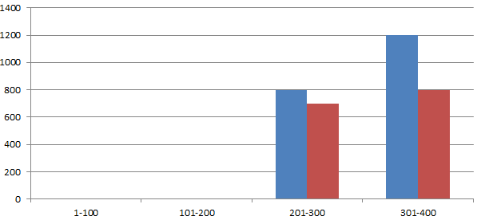

美吉生物
您身边的测序专家
帮助
数据质控
样本信息统计
样本碱基分布
样本的reads长度分布
OTU聚类
OTU表格
OTU Venn分析
pan-OTU and core-OTU
OTU组分图
Alpha多样性研究
多样性指数多样化展示
稀释性曲线
Rank-AbundanRce曲线
OTU物种累积曲线
beta多样性研究
距离矩阵及可视化
多元分析及可视化
丰度差异分析
丰度差异可视化
Ternary三元相图
Lesfe分析
样品分组：
group1
group2
group3
group4
新建分组
*
组A
组B
组C
组D
组E
选择步长：
1
20
50
100
确定
结果输出区域
Table名称：
reads的长度分布表_未命名
收起表格
步长
1-100
101-200
201-300
301-400
统计
样本1
0
0
800
1200
2000
样本2
0
0
800
1200
2000
样本3
0
0
800
1200
2000
样本4
0
0
800
1200
2000
样本5
0
0
800
1200
2000
下载此表格

箱线图
折线图
选择颜色方案
方案一
方案二
显示数值
保存图片